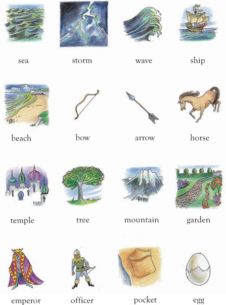

Gulliver's Travels in Lilliput
Jonathan Swift
trang trước
trang tiếp
Listen to Part 1:
Your browser does not support the audio element.
Từ điển hình ảnh có chú giải

Mục lục
Bìa
Trang bìa
Trang bản quyền
Chuyến du lịch tới xứ sở Lilliput của Gulliver
previous page
start
next page